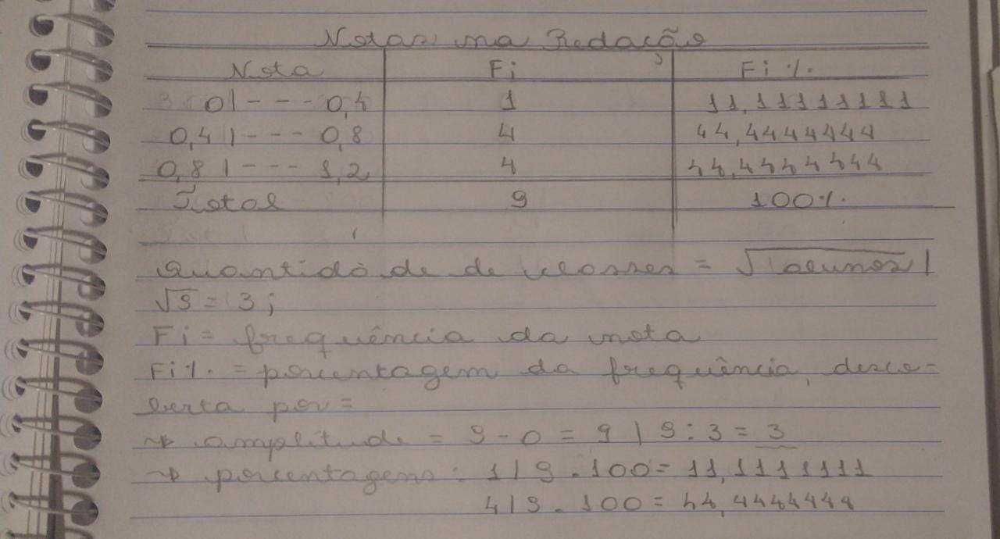

Estatística
Sobre
O conceito de estatística é "ciência exata que estuda a coleta, a organização, a análise e registro de dados por amostras." (Fonte: www.todamateria.com.br). Alguns conceitos importantes referentes à estatística são:
- População: conjunto dos elementos que terão determinadas características estudadas;
- Amostra: subconjunto da população;
- Censo: pesquisa que engloba toda a população;
- Amostragem: pesquisa que engloba apenas uma parcela da população (uma amostra).
Uma forma de demonstrar os resultados de pesquisas é por meio de tabelas e gráficos. Digamos que queremos demonstrar a frequência de pessoas de uma determinada escola que tiraram as seguintes notas em um trabalho que valia 1,2: 0,35; 0,42; 0,46; 0,57; 0,72; 0,8; 0,93; 1,2. Isso em uma tabela de classes ficaria:

Já em questão de gráficos, existem vários tipos dos mesmos que são usados para representar estatísticas. Eu escolhi representar o exemplo acima com um gráfico de em colunas, e é assim que ele ficou:

Existem, ainda, algumas outras coisas que podem ser calculadas no quesito estatística, sendo elas:
- Média Aritmética Simples: é calculada por meio da divisão da soma dos elementos do conjunto com o número de elementos. Por exemplo, a média aritmética simples da atividade citada acima fica: 0,35 + 0,42 + 0,46 + 0,57 + 0,72 + 0,8 + 0,93 + 1,2 = 5,45/9 = 0,605555556.
- Média Aritmética Ponderada: essa é a média usada quando os elementos têm pesos diferentes. Funciona como a média artmética simples, mas dessa vez, cada elemento é multiplicado por seu peso antes da soma.
- Mediana: valor que separa a população (ou amostra) em duas partes iguais.
- Moda: valor mais frequente numa série de elementos.
Minha Experiência
Estatística foi o conteúdo mais fácil desse ciclo. Eu